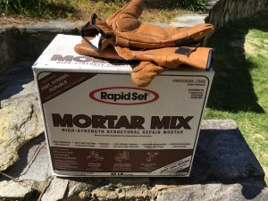

Another possibility: Could app submission volume be decreasing?
Year: 2016
🗣
I found a plant in my yard that I am 80% sure is an herb. (Rosemary?) Guess I won’t know for sure until I cook with it…
Tesla Ramps Up Model 3 Production Plans
I’ve said this before, but what I’d really like to see from Tesla is a pickup truck. It seems like the perfect fit. Tesla’s vehicles have lots of torque, which is desirable in a pickup. And just think of all the work trucks used by small businesses that are only driven within a small radius.
🗣
My first foray into masonry.

🗣
I’m doing my best to do more of the cooking. To that end, I bought Joy of Cooking and Essentials of Classic Italian Cooking. From the latter, here’s my attempt at Italian beef stew.
🗣
It’s no fun having to turn down interesting work. No fun at all.
🗣
Home Internet Usage
After reading that Comcast announced 1TB bandwidth caps, I took a look at our home bandwidth usage.

I can’t think of any one thing that I do that uses significant data. We just have two iPhones and a few computers doing normal things. (Online backups should considered a normal thing that everyone does.)
It’s clear that 1TB has to be the new minimum cap.
🗣
May is going to be a big month. We go back to Charleston for the baby’s cardiac catheterization, and they’ll set a date for the definitive surgery.
An Anthology of Personal Websites
I’ve maintained a personal website since I got to college in 1998. My first few sites were hand-coded html and resided on the university’s Solaris server. Along the way, I tried Geocities, Microsoft Front Page, Dreamweaver, Blogger, and iWeb. At no point during the first decade did I manage to create a readable website.
/~mjm9
- 1998 – 2000
This page is wonderfully bad. All it’s missing is an “under construction” animated gif. And WTF was I thinking when I collected these “ very useful or interesting links.” Ponderous. - August 2001
I think I built this page by hand with html and css. If you click around you’ll see I was into fencing at this time. - December 2001
A friend helped me build this version using Dreamweaver. Each cell of the navigation menu was an image, but they don’t all show up here. I probably have a copy of the original code on a Zip Drive somewhere. - May 2004
This is the only remaining evidence that I wrote my own blogging engine in PHP. The project lived at a different URL which was not scraped by archive.org. - August 2004
Looks like I tried Blogger for the first time. Wow, I’d totally forgotten that I’d written about my trips to Italy and Mexico.
matthew-morris.com
- November 2006
This one was built with iWeb and lived on shared hosting somewhere.
mattmorr.is and matt.ph
- 2012 Onward
I used Octopress, etc., on these domains. I’ve done scripted migrations from one platform to the other, but it looks like some of my old posts are missing.